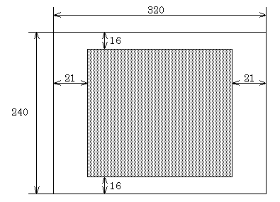
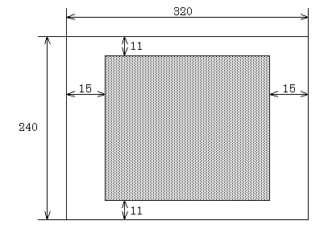
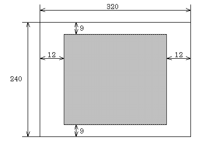

| (Horizontal direction) X axis | : | 31 dots inside from left and right |
| (Vertical direction) Y axis | : | 22 dots inside from top and bottom |
| (Horizontal direction) X axis | : | 22 dots inside from left and right |
| (Vertical direction) Y axis | : | 16 dots inside from top and bottom |
Note: To gain processing time in Mario64, nothing is displayed for 8 dots at the top and bottom of the screen.
| (Horizontal direction) X axis | : | 24 dots inside from left and right |
| (Vertical direction) Y axis | : | 21, 23 dots inside from top and bottom |
Note: To gain processing time in Wave Race, nothing is displayed for 20 dots at the top and bottom of the screen, and for 8 dots at the left and right of the screen.
| (Horizontal direction) X axis | : | 21 dots inside from left and right |
| (Vertical direction) Y axis | : | 16 dots inside from top and bottom |
|  |
| (Horizontal direction) X axis | : | 15 dots inside from left and right |
| (Vertical direction) Y axis | : | 11 dots inside from top and bottom |
|  |
| (Horizontal direction) X axis | : | 12 dots inside from left and right |
| (Vertical direction) Y axis | : | 9 dots inside from top and bottom |
|  |